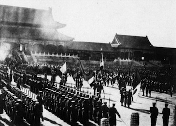

<!DOCTYPE html>
<html></html>
<!DOCTYPE html>
<html>
  <link rel="stylesheet" href="./css/basic template.css" />
  <link rel="stylesheet" href="./css/navbar.css" />
  <link rel="stylesheet" href="./css/introduction.css" />
  <head>
    <title>how revolitions arise</title>
  </head>
  <body>
    <ul class="nav">
      <li class="nav_li">
        <a href="./index.html" class="nav_li_on">introduction</a>
      </li>

      <li class="nav_li">
        <a href="./pages/Red Rising.html ">Red Rising</a>
      </li>

      <li class="nav_li">
        <a href="./pages/Shuihu Zhuan.html">Shuihu Zhuan</a>
      </li>

      <li class="nav_li">
        <a href="./pages/Romance of Three Kingdoms.html"
          >Romance of Three Kingdoms</a
        >
      </li>

      <li class="nav_li">
        <a href="./pages/Rise of the Planet of the Apes.html"
          >Rise of the Planet of the Apes</a
        >
      </li>

      <li class="nav_li">
        <a href="./pages/Snowpiercer.html">Snowpiercer</a>
      </li>

      <li class="nav_li">
        <a href="./pages/The Chinese Revolution of 1911.html"
          >The Chinese revolution of 1911</a
        >
      </li>

      <li class="nav_li">
        <a href="./pages/French revolution.html">French Revolution</a>
      </li>

      <li class="nav_li">
        <a href="./pages/Detroit become human.html">Detroit : become human</a>
      </li>

      <li class="nav_li">
        <a href="./pages/conclusion.html">Conclusion</a>
      </li>

      <li class="nav_li"><a href="./pages/Citation.html">Citation</a></li>
    </ul>
    <h1
      style="
        text-align: center;
        font-family: Georgia, 'Times New Roman', Times, serif;
      "
    >
      How are revolutions stirred up
    </h1>
    <p>
      
      
    </p>
    <p class="p1">
      Exploring why and how revolutions happen is like unlocking the secrets
      behind major social changes. Revolutions aren't just random explosions of
      anger; they usually happen because people are unhappy with things like
      unfairness or lack of rights. It's like a mix of different problems that
      come together and push people to say, "Enough is enough." By looking at
      these patterns, we can understand what makes communities decide to shake
      things up and try something new. The content of "Red Rising" stirs up my
      interst in exploring more information about this. Thus, my project dives
      into the reasons why revolutions happen, aiming to reveal the common
      threads that link different revolutions throughout history.
    </p>
    
  </body>
</html>
